Published: 2022-09-08
Original link: https://www.cnphotos.net/academy/show-89.html
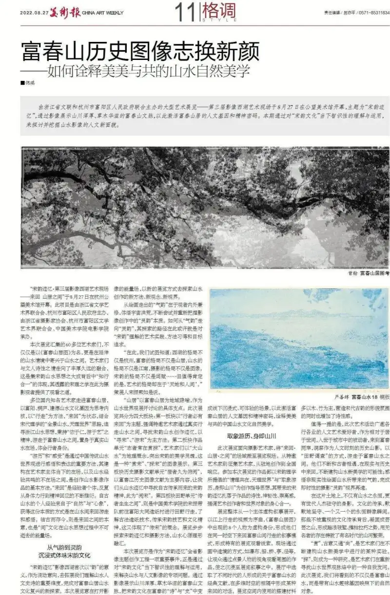
The large art exhibition co-hosted by the Zhejiang Federation of Literary and Art Circles and the Fuyang District People's Government of HangzhouThird Image West Lake Art Site: Traces of Song Charm, Provincial Themed Image Creation Results opened at Gongwang Art Museum at the end of August. Its theme was Going Back and Forth, Dwelling in the Mountains, In Between. Through images it showed the cultural lineage of Fuchun Mountain, with its rugged peaks and lush plants, to activate the humanistic genes and spiritual code of the mountain dwelling.
This issue explores and digs out a new humanistic face of landscape images through a present-day intellectual understanding and use of Song charm culture.
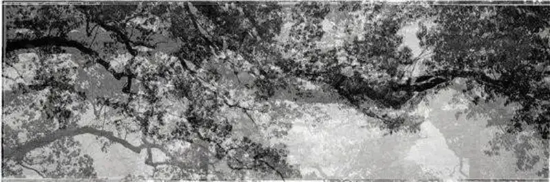
Zeng Han, Research on Dwelling in the Fuchun MountainsThe 60-plus artists gathered in this exhibition do not only take their name from Dwelling in the Fuchun Mountains. More than that, they find delight in the landscape within an extended landscape setting. The artists and the poetic feeling of the literati have come into a rich and lasting fusion. This shows the unity of knowing and doing behind the synthesis of Song landscape thought. The Song learning it reveals offers viewers of photography a way of seeing.
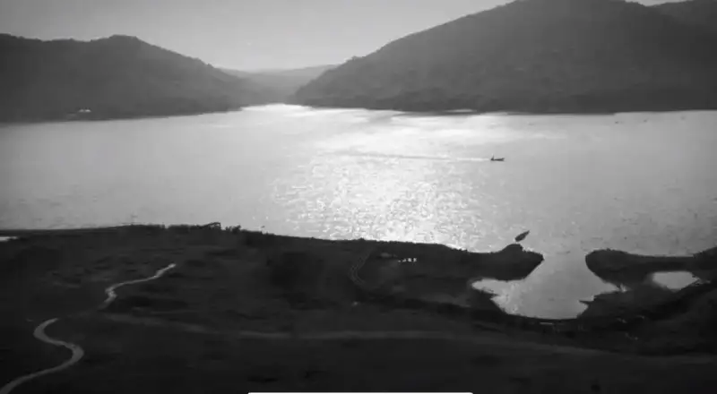
Tang Guo, The Long Moment 1Many well-known domestic artists entered the Fuchun mountain dwelling. They took the landscape cultural genes of Fuyang, Tonglu, and Jiande as the core of their thinking. They took walking as their method and going back and forth as their state. Drawing on the Song Neo-Confucian idea of a panoramic landscape and a world of heavenly principle, they pursued Zhejiang landscape thought. Holding the spirit of grounded in benevolence and wandering in the arts, they wandered through the Fuchun landscape, stood within the real mountains and rivers, and felt the identity of a walker.
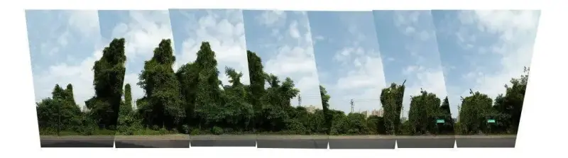
Fuhao, Artificial LandscapeTraveling and Feeling are key methods to gain insight and express through the traditional Chinese landscape worldview. They are built between the artist present presence and the absence that echoes the experience of landscape, and they form the basic method of making landscape images. Going back and forth is the individual experiencer repeatedly working out, from physical practice to spiritual response. Since ancient times, personal experience of landscape has come from nature and the image in the mind. The way to gain this essence is to wander and reflect back and forth among the mountains and rivers. To face the ancients while keeping the present is the very meaning of going back and forth. It is also the enduring energy field of the in-between culture in the process of landscape thought.
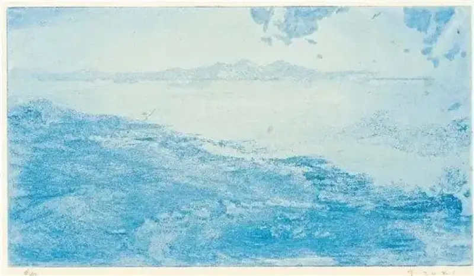
Yan Shanshun, Fuchun Landscape 18, copperplateFrom Rhythm-Spirit to Aura
Immersively Experiencing Song Charm Culture
The Traces of Song Charm Image West Lake project uses the meaning of charm as a flowing image for the first time, to expand the key dimension in which we understand the humanistic epic of landscape. It completes a new exploration of the revival of Fuchun mountain-dwelling landscape culture. This exhibition aims to open the energy field of images, and to use new exhibition ways to explore new methods, ideas, and visions of landscape creation。
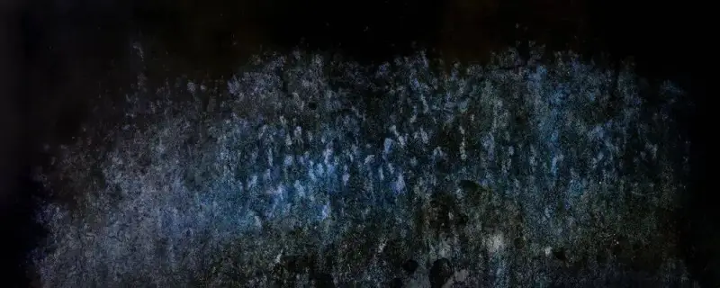
Liu Yiheng, Landscape Trace-Fuchun, No.1The rhythm-spirit that walked out of painting lies in the viewer, who cultivates both inner and outer, grasps the vast cosmos, and keeps trying to re-grasp the essence of aura in image making. How to move from rhythm-spirit to aura, the path of exploration here may be the artistic practice, the learned method, and the pursued goal of understanding Song charm.
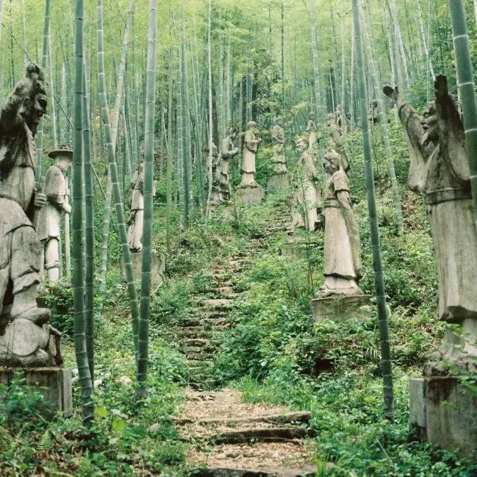
Sun Maoyicheng, Fuchun Travel Notes“Here we try to know that the scope of West Lake is not only Hangzhou, the scope of Fuchun is not only the mountain dwelling, the scope of landscape is not only the south of the Yangtze, the scope of photography is not only the image, and the scope of Song charm is not only poetry and verse. But what is certain is that the scope of art lies in heaven, earth, and the human world. So said the curator, Song Zhenxi.
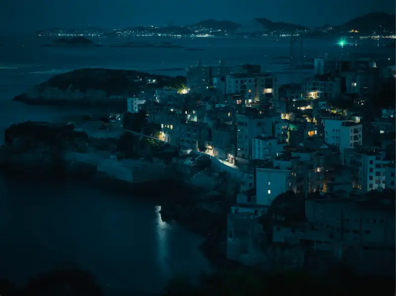
Xi Haoxin, View of Qida VillageMountain dwelling uses the Fuchun mountain dwelling as a regional metaphor, and a concrete point around which the landscape worldview is discussed. This exhibition is divided into four sections. The first section, themed a walker must go back and forth, stresses that invited artists truly walk among the mountains and rivers to find traces of Song landscape creation, with “Seeking Song”、“Roaming Song” as the main methods. The second section, the unit a determined person always appreciates and explores, takes the great landscape as a geographic concept and stresses the aesthetic soul of Song charm. It is a display of images that “Appreciating Song”、“Exploring Song”. The third section, the historical photography documents unit dwellers long overlook and read, centers on the historical image records of the Fuchun River. It lets us find the Song spirit passed down from ancient times within landscape traces, and this is “Reading Song”. The fourth section, the field unit inheritors live in the continuous flow, is Song Zhen of the China Academy of Art leading a team to Datong papermaking village in Fuyang for fieldwork. They learned the ancient papermaking craft and carried on Song craft and cultural spirit, which embodies the idea of “Passing on Song”. The exhibition explores the traces of Song charm and photographic methods step by step, fusing the landscape, the mind source, and principle and form.
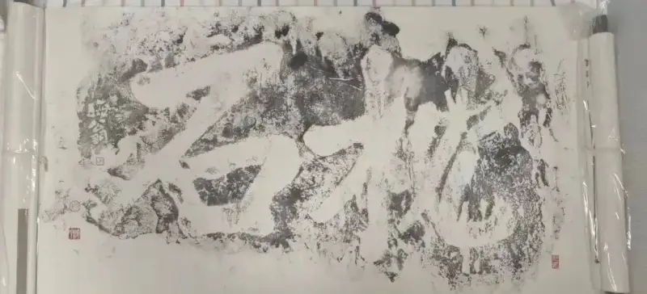
Xu Li, Pillow on StoneThis exhibition is also a key event in the provincial themed image creation project Traces of Song Charm. It solves the specific problems of landscape and humanistic images through a present-day intellectual understanding and use of Song charm culture solves the specific problems of landscape and humanistic images through a present-day intellectual understanding and use of Song charm culture. Through images it shows the cultural lineage of Fuchun Mountain, with rugged peaks and lush plants. It turns the poetry and history of Song culture in Fuchun into an offline, immersive, experienceable scene. In this way it activates the humanistic genes and spiritual code of the Fuchun mountain dwelling, and interprets the natural aesthetics of Chinese landscape culture in which beauties share together。
Taking Images on a Journey
The Body Is the Mountains and Rivers
This exhibition, aimed at photographic artists, brings the field of Going Back and Forth, Mountain Dwelling, In Between into the gallery. It runs from invited artists to open-call artists, and from residencies to a nationwide response. The works in the exhibition all take as their guiding idea the Song Neo-Confucian call for feeling and reason together in a world of heavenly principle, and for Taking Images on a Journey with The Body Is the Mountains and Rivers. The traces of Song charm they bring take root in the poetic, mysterious, and sublime quality of the works, and stress the unity of body and mind between the art maker and the world。
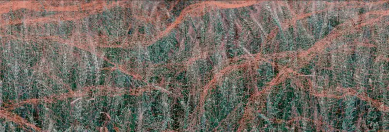
Wang Ruobang, Are You Fishing-NetThe whole exhibition opens from one central fictional narrative. A video of walking on the river serves as the overture. The eight figures that appear in Dwelling in the Fuchun Mountains are given fictional identities, forming a narrative in which they walk back and forth among the Fuchun mountains in the same time and place. This creates a unique viewing thread through the show. On site, through the making of scenes within the painting, such as waterfalls, boats, bridges, pavilions, and paths, the viewer looks at the works around through the eyes of the staffage figures, and is drawn into the narrative. The gallery selects classic documents from people of different eras about the Fuchun landscape, and across the distance of many times and spaces they form a kind of back-and-forth dialogue. The materials used to build the space are mostly wood and bamboo. They create the look and mood of ancient Song style, and also add a poetic feeling.
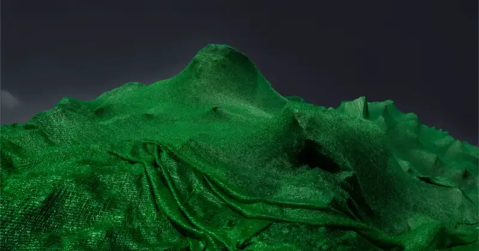
Wang Jianwei, Return to Blue, Return to Green 2It is worth noting that this art event widely invited lovers of the humanities and the arts from all walks of life. As people who otherwise dwell in the world and passively enter the city, they came to both banks of the Fuchun to observe the historical mountain shadows as humanistic moments. In the manner of fieldwork, they wandered through the Fuchun landscape. They kept meeting the people of old, moving back and forth between the real and the historical, and kept building the possibility of a new landscape aesthetic kept building the possibility of a new landscape aesthetic. They grasped the rhythm-spirit that comes from the unreal painted landscape, and completed an on-the-spot re-creation of a photographic aura vision.
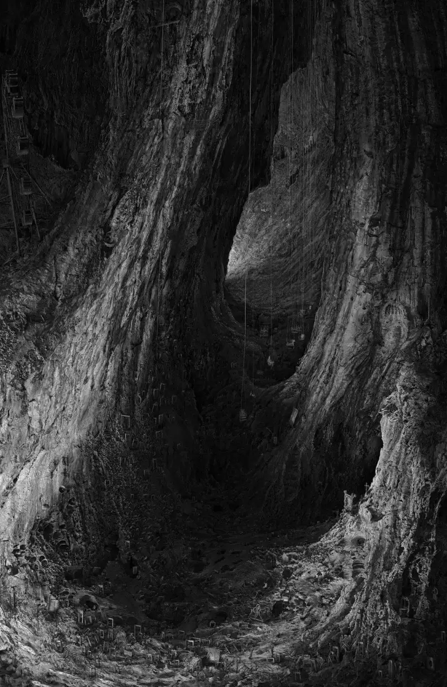
Zhang Lanpo, Giants 4On this land there is not only the eternity of mountains and rivers, but also the figures of outstanding people who have guarded it across generations. The passing on of culture silently holds firm, in one enduring group-portrait moment after another. Behind the cultural transmission that goes unnoticed, it has solidified into a multitude of mountains, taking the force of breaking through waves and crushing decay. The existence of the nameless has forged the prosperity of the land in the named ages.
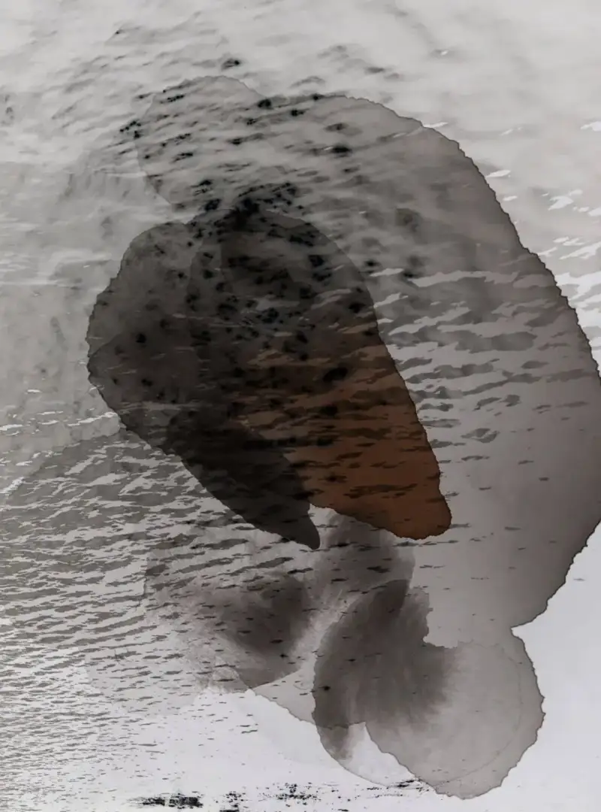
Yan Jingwen, Where to Go 3Appreciate, in its ancient meaning, also links to esteem. It is an experiment the artists carry out as they keep building a new landscape aesthetic. Explore becomes a kind of research, a self-questioning as the artists re-find the thread of the landscape worldview. In this exhibition, we will see not only the Fuchun landscape, but natural objects reflected through the genes of a taste for landscape。